[RI] Revisit time series data, especially stale weekend numbers
Issue number 697
space-buzzer opened this issue on July 29, 2020 at 10:15 pm
Rhode Island publishes a Google Spreadsheet with full time series for all the metrics we capture. We need to check whether we miss weekend updates because the dashboard is frozen, and backfill from RI’s data if this is the case
Comments
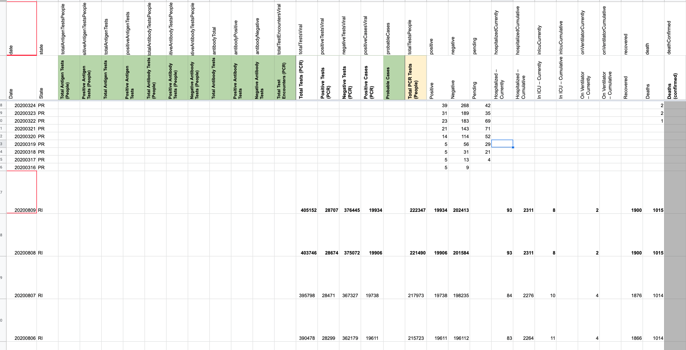The bold cells are the values that we changed. (@space-buzzer made the change)
This is now a weekly task and we (@space-buzzer @muamichali and I) agreed that we’ll use a slack shiftbot for the weekly reminder. So now the work for this issue is to create and train the shift bot. : )
I created a workflow for mondays at 11am with the RI reminder. I don’t see a way to manually trigger it now to test it, so I’m moving this card to “needs verification” and set myself a separate reminder for next Monday.
Update 2020-08-17 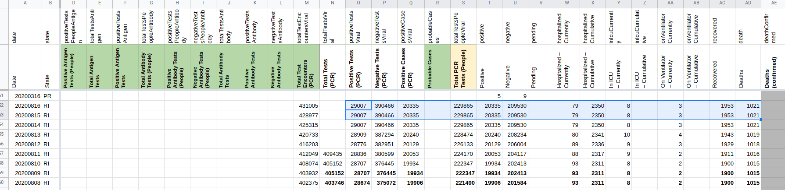 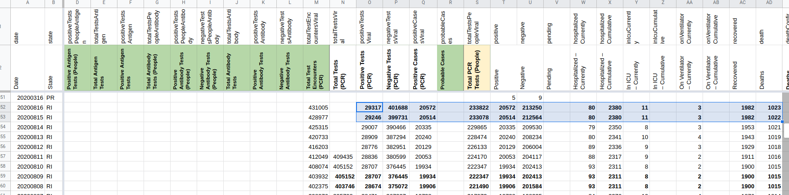
We shifted the days we filled by 1 day, to be compatible with how pub-shift is capturing the numbers. Every day, during pub shift, we capture numbers for the previous day (and they’re added to todays count). For weekend update, we should continue using the same strategy, otherwise, we report the “Sunday” number twice – for Sunday and Monday
To remedy it, weekend update will behave exactly like pub-shift wrt day attribution
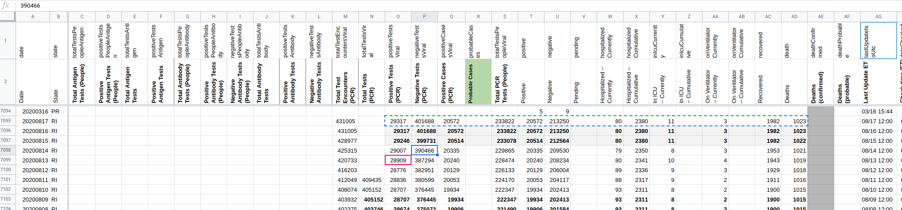 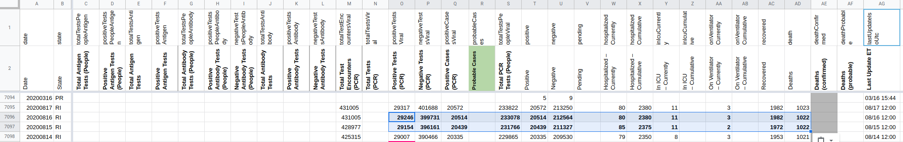
Another week, another update 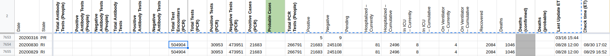 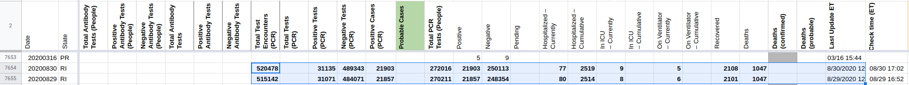
Laber day weekend 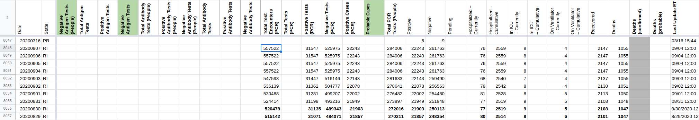 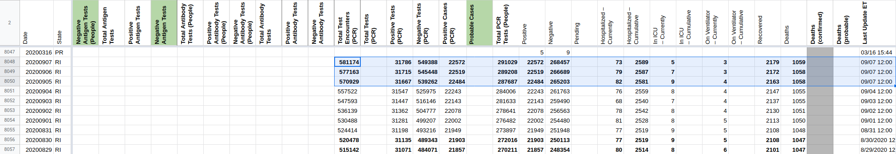
Weekend fill for 9/12 and 9/13:
Rows edited: 2
RI 2020-09-13 positive: 23098 (was 22905) negative: 284385 (was 280118) hospitalizedCumulative: 2644 (was 2620) inIcuCurrently: 7 (was 8) onVentilatorCurrently: 4 (was 3) recovered: 2223 (was 2201) death: 1075 (was 1071) positiveTestsViral: 32660 (was 32589) negativeTestsViral: 600850 (was 583094) positiveCasesViral: 23098 (was 22905) totalTestEncountersViral: 633510 (was 615683) totalTestsPeopleViral: 307483 (was 303023)
RI 2020-09-12 positive: 22999 (was 22905) negative: 283137 (was 280118) hospitalizedCumulative: 2639 (was 2620) onVentilatorCurrently: 4 (was 3) recovered: 2220 (was 2201) death: 1072 (was 1071) positiveTestsViral: 32558 (was 32589) negativeTestsViral: 595533 (was 583094) positiveCasesViral: 22999 (was 22905) totalTestEncountersViral: 628091 (was 615683) totalTestsPeopleViral: 306136 (was 303023)
2020-09-21 All done!
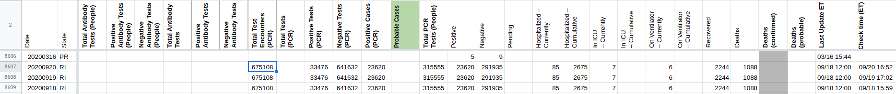 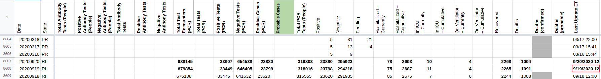
@space-buzzer @theomichel I think this was solved with RI bot! Unless we need to log those edits here, I’m going to close this issue.
We concluded that we aren’t missing cases in the cumulative counts, but our graphs are ugly with giant dips on weekends followed by spikes on Mondays, because RI doesn’t update their dashboard on the weekends.
We decided to go ahead and do a very targeted weekly backfill, where every Monday we backfill in RI’s cumulative totals for Saturday and Sunday from their google sheet of data. This will smooth the graph somewhat, although it’ll leave a small spike on saturday.
The likely reason for the saturday spike is that the monday spikes were actually due to 2 factors:
We’ve solved #1, but we have moved #2 to showing up on Saturday instead of Monday.